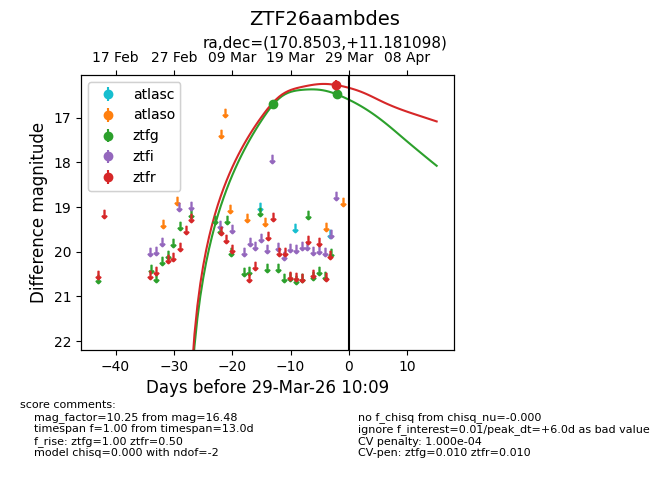
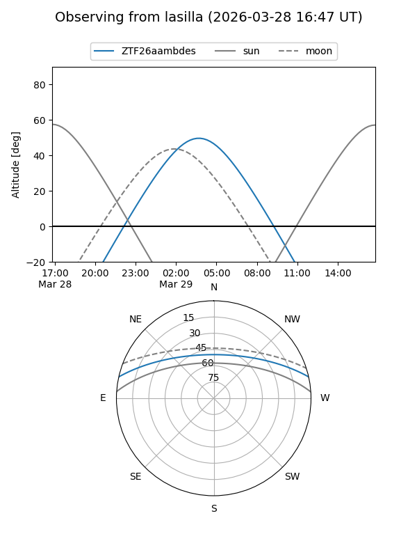
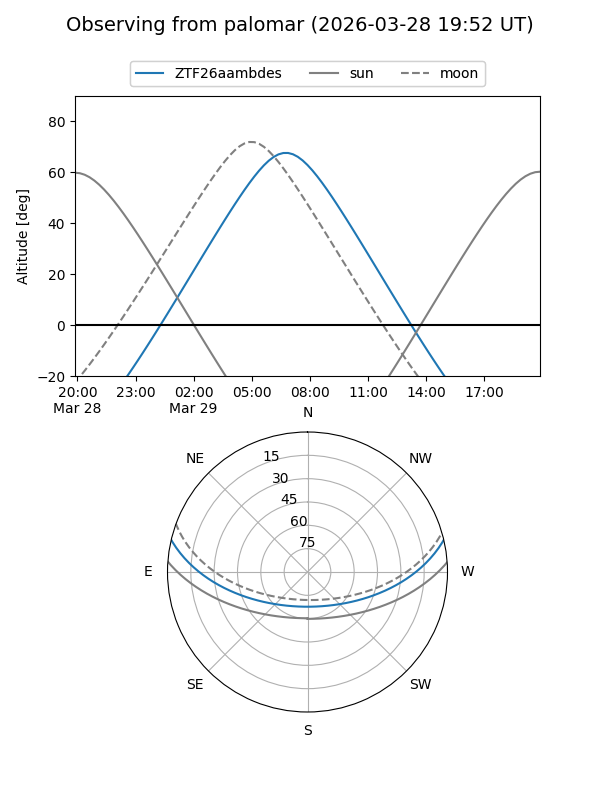
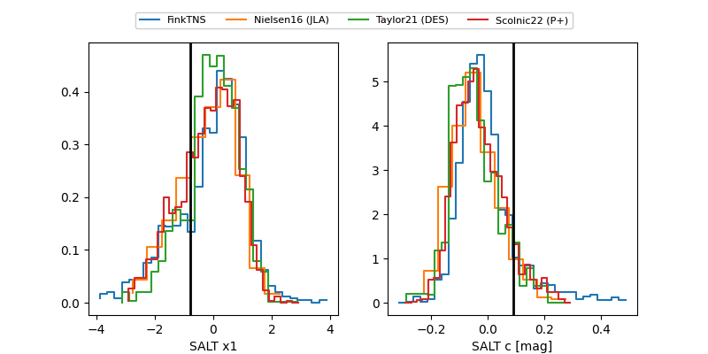

ZTF26aambdes
Target ZTF26aambdes at 2026-03-29 10:12
Aliases and brokers:
FINK: link
Lasair: link
ALeRCE: link
alt names
ZTF26aambdes (ztf,fink_ztf)
Coordinates:
equatorial (ra, dec) = 170.8503,+11.18110
equatorial (HMS+DMS) = 11:23:24.07,+11:10:51.95
galactic (l, b) = (246.3032,+63.88178)
Flags:
likely cv
Photometry:
last ztfg=16.48, ztfr=16.27
2 ztfg, 1 ztfr detections
Lightcurve

Visibility


Additional plots
